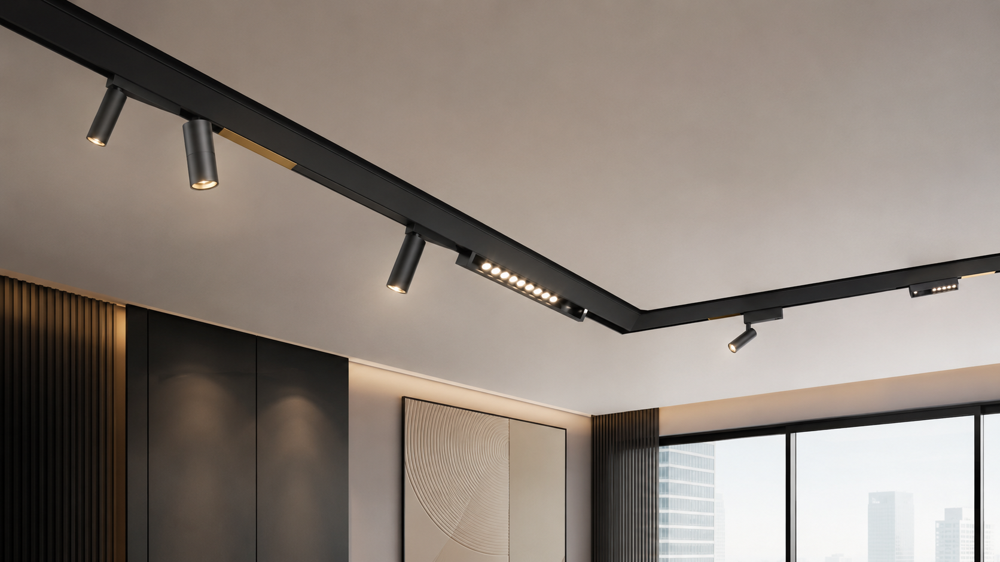

Technical Insight
48V vs. 24V Magnetic Track Lighting: Which one is right for your project?
May 28, 2026
A professional technical comparison of 48V and 24V systems covering voltage drop, efficiency, safety, and market standards for commercial and residential projects.
Read Article →